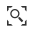

Attributes Table¶
When clicking on the  button of the Table of Contents (TOC), the Attributes Table panel opens at the bottom of the Map page.
button of the Table of Contents (TOC), the Attributes Table panel opens at the bottom of the Map page.
The Attributes Table Panel
In that panel you can navigate through the features of the layer, zoom to their geometries by clicking on the  icon and explore their attributes.
{kind=link}

Filtering Features by Attribute
The Attributes Table panel contains a Toolbar which makes you available some useful functionalities.
The Attributes Table Toolbar
Those functionalities are:
- Edit ModeBy clicking on you can start an editing session. It permits you to add new features, to delete or modify the existing ones, to edit geometries. See the Editing the Layer Data section for further information.
- Advanced SearchClick on , a new panel opens. That panel allows you to filter features in many different ways. This functionality will be explained in depth in the Advanced Search section.
- Hide/show columns
Hide/Show Columns of the Attributes Table
- Create a chartThrough the button you can open the Chart Widgets panel where many functionalities to describe and visualize the layer data are available (see Creating Widgets).
- Sync map with filterClick on the
 icon to synchronize the map with the filter.
icon to synchronize the map with the filter.
{kind=link}
{kind=link}
{kind=link}
{kind=link}
{kind=link}
Advanced Search¶
As mentioned before, GeoNode allows both an attribute based and spatial filtering. When clicking on from the layer Attributes Table the Advanced Search panel opens and shows you three different filtering functionalities:

Advanced Search
In the Attribute Filter section you can compose a series of conditions about the attributes of the layer. Click on to insert a new empty condition. Select the attribute you are interested in, select an operator and type a comparison value. You can group conditions through the Add Group button. Click on to perform the search.
Filtering by Attributes
You can also decide if All the conditions have to be met, if only Any or None of them (see the red arrow in the picture above).
- The Region of interest filtering allows you to filter features that have some relationship with a spatial region that you draw on the map.
Filtering by Region Of Interest
Through the Layer Filter you can select only those features which comply with some conditions on other layers of the map. You can also add conditions on attributes for those layers.
Layer Filtering
{kind=link}
{kind=link}
{kind=link}
You can read more about the Attributes Table and the Advanced Search on the MapStore2 Documentation.